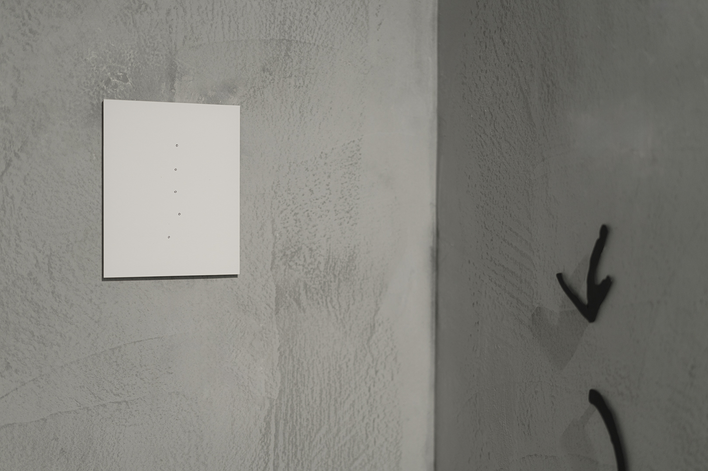

彼觸 collecting cipher
23 Mar – 7 Apr 2024
窯座 Yao Alternative Art Space
I started playing the erhu in an orchestra when I was 7 years old. This experience gave me 20 years to observe the customs, gestures, and behaviours of communal music-making from within. The concept of a Chinese orchestra as we know it today is a relatively recent development in the history of Chinese instrumental music, with much of the traditions and customs still being formed.
In my teenage years, I served as a score librarian for 5 years, which explains my penchant for hand-copied jianpu (cypher notation). The jianpu is accessible and symbolic of the shared languages and collective experiences on the periphery. The various handwriting and symbols created and borrowed are also full of stories and allusions of their own. As a mnemonic device, jianpu is almost like a language system, serving as the scaffolding for communal music-making. These inconspicuous notes are all traces of learning, adaptation, innovation and sharing; embedded in them is the culture of ensembleship with curious quirks, rooted in a desire to carve out a shared language and identity.
The five series of works in collecting ciphers manifests the different stories found within the annotations and handwritten elements of these hand-copied notations and scores.
The show collateral can be found here.
Installation view at 窯座 Yao Alternative Art Space, Taichung.
Photo credits: DULUB Studio